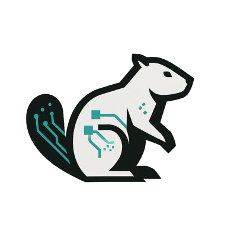

Health, work, the mind — logged, indexed, and occasionally understood. Everything here is under construction, like all good dams.
Loading logs…
DPI for Data, Finance & Health. Grew from Associate → Associate Architect → Architect.
India's fastest medical emergency network. Gurugram.
Supply chain & operations. Goa.
Risk consulting. Gurugram.
Inter-IIT tech fest · Nirmaan pre-incubation cell · Shaastra · Saarang · placement & hostel council.